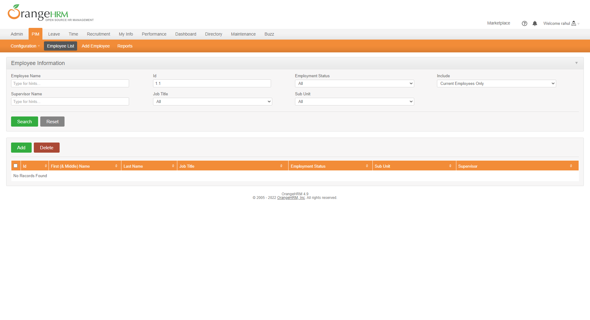
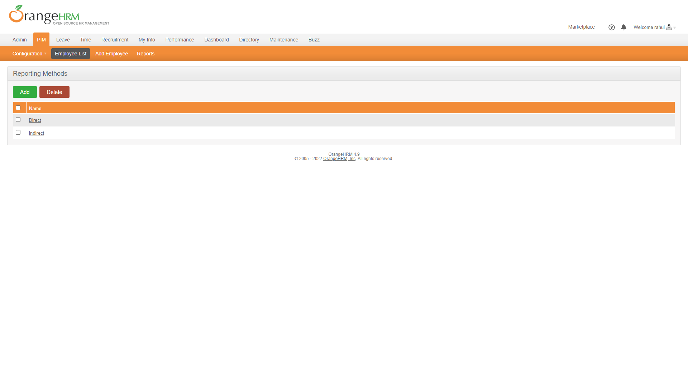
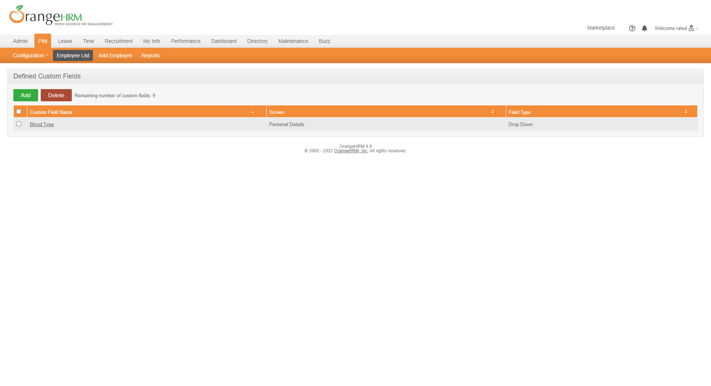
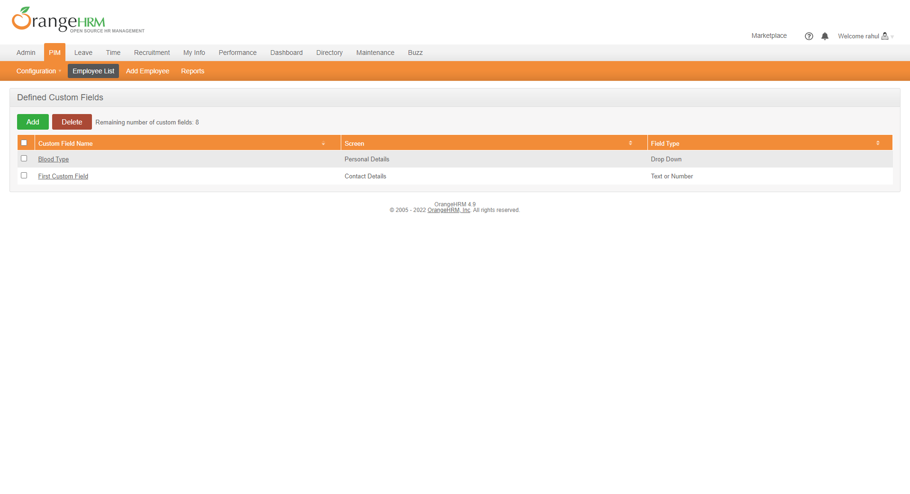
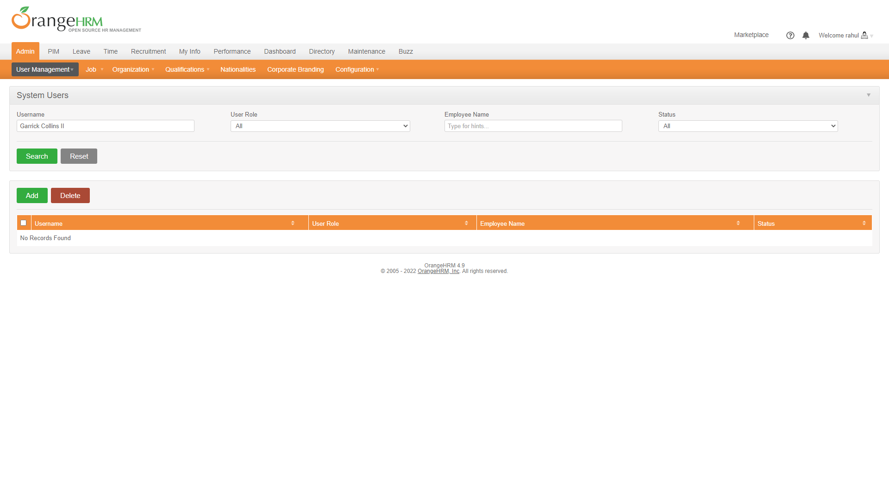
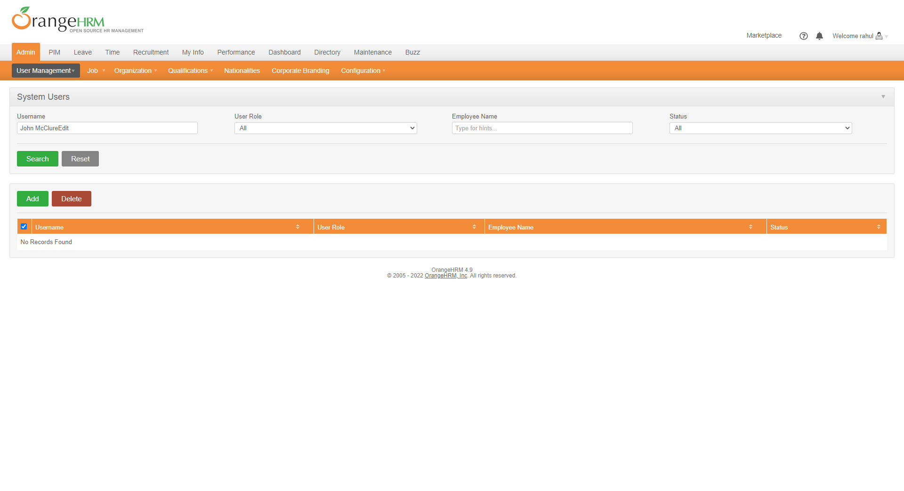

-
Add and Edit Employee
5:57:27 PM / 00:00:41:061 Fail
Add and Edit Employee
04.11.2022 5:57:27 PM 04.11.2022 5:58:08 PM 00:00:41:061 · #test-id=1PassCheck Date validation message show Employee Record successfullyGiven I launch application and on login pageWhen User login with following credentials detailsAdmin admin123 And User click submit buttonAnd User on PIM menuAnd User go to Edit Employee menuAnd User search employee by employee IDGiven User On personal pageWhen User go to personal page and enter date in wrong formatAnd User save dataThen Date validation error message showPassDelete Employee Record not found in listGiven I launch application and on login pageWhen User login with following credentials detailsAdmin admin123 And User click submit buttonAnd User on PIM menuAnd User go to Edit Employee menuAnd User search employee by employee ID for DeleteGiven User On employee ListWhen User Deleted search record from listThen Deleted record not found in listFailDelete Employee Record successfullyGiven I launch application and on login pageWhen User login with following credentials detailsAdmin admin123 And User click submit buttonAnd User on PIM menuAnd User go to Edit Employee menuAnd User search employee by employee ID for DeleteGiven User On employee ListWhen User Delete the selected recordcom.bddcucumberframework.stepDefinations.Hooks.screenshots(io.cucumber.java.Scenario)screenshot nameThen Record Deleted SuccessfullyStep skippedFailCheck user Attached file successfully in employee personal sectionGiven I launch application and on login pageWhen User login with following credentials detailsAdmin admin123 And User click submit buttonAnd User on PIM menuAnd User go to Edit Employee menuAnd User search employee by employee IDcom.bddcucumberframework.stepDefinations.Hooks.screenshots(io.cucumber.java.Scenario)screenshot nameGiven User On personal pageStep skippedWhen User browse a file and upload itStep skippedThen file upload successfully with messageStep skippedPassCheck user edit custom Field successfullyGiven I launch application and on login pageWhen User login with following credentials detailsAdmin admin123 And User click submit buttonAnd User on PIM menuAnd User go to Edit Employee menuAnd User search employee by employee IDGiven User On personal pageWhen User edit employee custom Field informationAnd User save dataThen User custom Field edit successfullyPassCheck user edit Employee Personal Details successfullyGiven I launch application and on login pageWhen User login with following credentials detailsAdmin admin123 And User click submit buttonAnd User on PIM menuAnd User go to Edit Employee menuAnd User search employee by employee IDGiven User On personal pageWhen user click on Edit ButtonAnd User edit employee personal informationAnd User save dataThen User personal data edit successfullyPassCheck user add contact Details successfully in personal sectionGiven I launch application and on login pageWhen User login with following credentials detailsAdmin admin123 And User click submit buttonAnd User on PIM menuAnd User go to Edit Employee menuAnd User search employee by employee IDGiven User On personal pageWhen User Edit Contact details of employeeThen Contact Details added successfullyPassAdd Employee Record successfullyGiven I launch application and on login pageWhen User login with following credentials detailsAdmin admin123 And User click submit buttonAnd User on PIM menuGiven User go to Add Employee menuWhen User insert details in form for add Employee and save recordThen User move to Personal Details page of applicationFailCheck user upload profile image successfully in personal sectionGiven I launch application and on login pageWhen User login with following credentials detailsAdmin admin123 And User click submit buttonAnd User on PIM menuAnd User go to Edit Employee menuAnd User search employee by employee IDcom.bddcucumberframework.stepDefinations.Hooks.screenshots(io.cucumber.java.Scenario)screenshot nameGiven User On personal pageStep skippedWhen User upload profile pictureStep skippedThen profile picture upload successfullyStep skippedPassCheck user edit emergency contact Details successfully in personal sectionGiven I launch application and on login pageWhen User login with following credentials detailsAdmin admin123 And User click submit buttonAnd User on PIM menuAnd User go to Edit Employee menuAnd User search employee by employee IDGiven User On personal pageWhen User Edit emergency Contact details of employeeThen Emergency Contact Details added successfullyPassCheck user edit Immigration Record successfully in personal sectionGiven I launch application and on login pageWhen User login with following credentials detailsAdmin admin123 And User click submit buttonAnd User on PIM menuAnd User go to Edit Employee menuAnd User search employee by employee IDGiven User On personal pageWhen User Edit immigration record details of employeeThen Immigration record Details added successfullyPassCheck user edit job Record successfully in personal sectionGiven I launch application and on login pageWhen User login with following credentials detailsAdmin admin123 And User click submit buttonAnd User on PIM menuAnd User go to Edit Employee menuAnd User search employee by employee IDGiven User On personal pageWhen User Edit job record details of employeeThen job record Details edit successfullyPassCheck user added employee Salary Record successfully in personal sectionGiven I launch application and on login pageWhen User login with following credentials detailsAdmin admin123 And User click submit buttonAnd User on PIM menuAnd User go to Edit Employee menuAnd User search employee by employee IDGiven User On personal pageWhen User Edit salary record details of employeeThen salary record Details edit successfullyPassCheck user added employee tax Exemption Record successfully in personal sectionGiven I launch application and on login pageWhen User login with following credentials detailsAdmin admin123 And User click submit buttonAnd User on PIM menuAnd User go to Edit Employee menuAnd User search employee by employee IDGiven User On Tax Exemptions pageWhen User added tax exemption record into details of employeeThen tax exemption Details edit successfullyPassCheck user added employee MemberShip Record successfully in personal sectionGiven I launch application and on login pageWhen User login with following credentials detailsAdmin admin123 And User click submit buttonAnd User on PIM menuAnd User go to Edit Employee menuAnd User search employee by employee IDGiven User On Memberships sectionWhen User added Memberships record into details of employeeThen Memberships record added successfully -
Reporting Method
5:57:27 PM / 00:01:18:898 Fail
Reporting Method
04.11.2022 5:57:27 PM 04.11.2022 5:58:46 PM 00:01:18:898 · #test-id=6PassFile Successfully DownloadGiven I launch application and on login pageWhen User login with following credentials detailsAdmin admin123 And User click submit buttonAnd user hover on PIM to see all menu optionAnd Go to Data Import pageGiven User is on Data Import pageWhen I download file successfully from Data Import SectionAnd Upload File from Data Import SectionAnd I try to save file without uploadThen message required validation message showPassAdd Reporting Method SuccessfullyGiven I launch application and on login pageWhen User login with following credentials detailsAdmin admin123 And User click submit buttonAnd user hover on PIM to see all menu optionAnd Go to Reporting Method pageGiven User is on reporting method pageWhen I click on Add button for add reporting methodAnd Enter the data into reporting method form and save itThen Data save successfully and message show Successfully SavedFailDelete Reporting Method SuccessfullyGiven I launch application and on login pageWhen User login with following credentials detailsAdmin admin123 And User click submit buttonAnd user hover on PIM to see all menu optionAnd Go to Reporting Method pageGiven User is on reporting method pageWhen Select reporting record and delete itcom.bddcucumberframework.stepDefinations.Hooks.screenshots(io.cucumber.java.Scenario)screenshot nameThen successfully record deleted with message show "Successfully Deleted"Step skipped -
Add and delete job Functionality
5:57:50 PM / 00:00:22:056 Pass
Add and delete job Functionality
04.11.2022 5:57:50 PM 04.11.2022 5:58:12 PM 00:00:22:056 · #test-id=215PassAdd job titlesGiven I launch application and on login pageWhen User login with following credentials detailsAdmin admin123 And User click submit buttonAnd user go to system adminAnd user go to Job menuAnd User go to job Title pageGiven User go to Add Job Title pageWhen User insert following details in form for add job title and save recordFounder SQA Trainings C:\Users\onoff\Desktop\ok\image.png Zeeshan Co Founder SQA Trainings C:\Users\onoff\Desktop\ok\image.png Imran Coordinator SQA Trainings C:\Users\onoff\Desktop\ok\image.png uneeba Then Record save successfully with message "Successfully Saved" and user also redirect to the view job title list pagePassDelete Job TitleGiven I launch application and on login pageWhen User login with following credentials detailsAdmin admin123 And User click submit buttonAnd user go to system adminAnd user go to Job menuAnd User go to job Title pageGiven user is on job title list pageWhen user select those record which need to deleteAnd User delete all recordThen record deleted Successfully with message of "Successfully Deleted" -
Custom form Action
5:58:00 PM / 00:00:37:827 Fail
Custom form Action
04.11.2022 5:58:00 PM 04.11.2022 5:58:38 PM 00:00:37:827 · #test-id=316PassRequired validation message show in custom field formGiven I launch application and on login pageWhen User login with following credentials detailsAdmin admin123 And User click submit buttonAnd user hover on PIM to see all menu optionAnd Go to custom fieldGiven User is on custom field pageWhen I click on Add buttonAnd without fill all the field I try to save dataThen Required validation message showPassAdd custom field SuccessfullyGiven I launch application and on login pageWhen User login with following credentials detailsAdmin admin123 And User click submit buttonAnd user hover on PIM to see all menu optionAnd Go to custom fieldGiven User is on custom field pageWhen I click on Add buttonAnd Enter the data and save itThen Data save successfully and message show Successfully SavedFailEdit custom field SuccessfullyGiven I launch application and on login pageWhen User login with following credentials detailsAdmin admin123 And User click submit buttonAnd user hover on PIM to see all menu optionAnd Go to custom fieldGiven User is on custom field pageWhen Edit the data and save itcom.bddcucumberframework.stepDefinations.Hooks.screenshots(io.cucumber.java.Scenario)screenshot nameThen Data save successfully and message show Successfully SavedStep skippedFailDelete custom field record SuccessfullyGiven I launch application and on login pageWhen User login with following credentials detailsAdmin admin123 And User click submit buttonAnd user hover on PIM to see all menu optionAnd Go to custom fieldGiven User is on custom field pageWhen Select the a record and Delete itcom.bddcucumberframework.stepDefinations.Hooks.screenshots(io.cucumber.java.Scenario)screenshot nameThen successfully record deleted with message show "Successfully Deleted"Step skipped -
Navigation to appropriate page
5:58:04 PM / 00:00:12:530 Pass
Navigation to appropriate page
04.11.2022 5:58:04 PM 04.11.2022 5:58:16 PM 00:00:12:530 · #test-id=355PassUser go to System User page of applicationGiven I launch application and on login pageWhen User login with following credentials detailsAdmin admin123 And User click submit buttonGiven user is on dashboard pageWhen user go to system users section by click on Users menuThen user successfully move to system user page of application -
Login Action
5:58:04 PM / 00:00:26:795 Fail
Login Action
04.11.2022 5:58:04 PM 04.11.2022 5:58:31 PM 00:00:26:795 · #test-id=358Passvalidation message show when User forget to enter username in login pageGiven I launch application and on login pageWhen User forget to enter usernameAnd User click submit buttonThen Message display Username cannot be empty on login pageFailvalidation message show when User forget to enter password in login pageGiven I launch application and on login pagecom.bddcucumberframework.stepDefinations.Hooks.screenshots(io.cucumber.java.Scenario)screenshot nameWhen User only enter username but forget to enter passwordStep skippedAnd User click submit buttonStep skippedThen Message display Password cannot be empty on login pageStep skippedPassUser enter invalid Credentials in login pagePassUser enter invalid Credentials in login pageGiven I launch application and on login pageWhen I enter username as admin and password as adminAnd User click submit buttonThen Error Message display Invalid credentials on login pagePassUser enter invalid Credentials in login pageGiven I launch application and on login pageWhen I enter username as admin12 and password as admin12And User click submit buttonThen Error Message display Invalid credentials on login pagePassUser login successfullyGiven I launch application and on login pageWhen User login with following credentials detailsAdmin admin123 And User click submit buttonThen User login into application URl should be changedAnd Dashboard heading should be shown on Main page -
Logout Functionality
5:58:12 PM / 00:00:11:910 Pass
Logout Functionality
04.11.2022 5:58:12 PM 04.11.2022 5:58:24 PM 00:00:11:910 · #test-id=444PassUser logout from applicationGiven I launch application and on login pageWhen User login with following credentials detailsAdmin admin123 And User click submit buttonGiven User is on dashboardWhen I go to welcome menu and click on it dropdown open and click on logout optionThen user logout successfully and redirect to login panel section -
Add User Action
5:58:16 PM / 00:00:47:303 Fail
Add User Action
04.11.2022 5:58:16 PM 04.11.2022 5:59:04 PM 00:00:47:303 · #test-id=499Passcheck password strengthPasscheck password strengthGiven I launch application and on login pageWhen User login with following credentials detailsAdmin admin123 And User click submit buttonAnd user go to system users section by click on Users menuGiven I Go to Add User page for add userWhen I enter all required data into Add user formAnd I Enter password Teste to check strength of passwordThen Very Weak Password length is display as a password lengthPasscheck password strengthGiven I launch application and on login pageWhen User login with following credentials detailsAdmin admin123 And User click submit buttonAnd user go to system users section by click on Users menuGiven I Go to Add User page for add userWhen I enter all required data into Add user formAnd I Enter password Tester01 to check strength of passwordThen Weak Password length is display as a password lengthPasscheck password strengthGiven I launch application and on login pageWhen User login with following credentials detailsAdmin admin123 And User click submit buttonAnd user go to system users section by click on Users menuGiven I Go to Add User page for add userWhen I enter all required data into Add user formAnd I Enter password Tester@01 to check strength of passwordThen Better Password length is display as a password lengthPasscheck password strengthGiven I launch application and on login pageWhen User login with following credentials detailsAdmin admin123 And User click submit buttonAnd user go to system users section by click on Users menuGiven I Go to Add User page for add userWhen I enter all required data into Add user formAnd I Enter password Tester@01234!@$# to check strength of passwordThen Strong Password length is display as a password lengthPasscheck password strengthGiven I launch application and on login pageWhen User login with following credentials detailsAdmin admin123 And User click submit buttonAnd user go to system users section by click on Users menuGiven I Go to Add User page for add userWhen I enter all required data into Add user formAnd I Enter password Tester@01234!@$#!@#$ to check strength of passwordThen Strongest Password length is display as a password lengthPasscheck password field mandatory when I forget to enter passwordGiven I launch application and on login pageWhen User login with following credentials detailsAdmin admin123 And User click submit buttonAnd user go to system users section by click on Users menuGiven I Go to Add User page for add userWhen I enter all required data into Add user formAnd I enter nothing in password field and click on save buttonThen Error message show that password requiredPasscheck Miss Match password Validation show in confirm password field.Given I launch application and on login pageWhen User login with following credentials detailsAdmin admin123 And User click submit buttonAnd user go to system users section by click on Users menuGiven I Go to Add User page for add userWhen I enter all required data into Add user formAnd In password field I enter password "Tester@01"And In confirm password field I enter password "tester01"Then Passwords do not match Validation error message show "Passwords do not match"PassUser Added Successfully.Given I launch application and on login pageWhen User login with following credentials detailsAdmin admin123 And User click submit buttonAnd user go to system users section by click on Users menuGiven I Go to Add User page for add userWhen I enter all required data into Add user formAnd I enter correct password "Tester@01" and confirm password "Tester@01"And save the recordThen page Url successfully change and successful message show in System Users PageFailsearch a user which is added successfullyGiven I launch application and on login pageWhen User login with following credentials detailsAdmin admin123 And User click submit buttonAnd user go to system users section by click on Users menuGiven User is on system pageWhen I enter username and click on search buttonThen added user show in the recordcom.bddcucumberframework.stepDefinations.Hooks.screenshots(io.cucumber.java.Scenario)screenshot nameFailEdit user record which is recently addedGiven I launch application and on login pageWhen User login with following credentials detailsAdmin admin123 And User click submit buttonAnd user go to system users section by click on Users menuGiven User is on system pageWhen I enter username and click on search buttonAnd I click on appear recordcom.bddcucumberframework.stepDefinations.Hooks.screenshots(io.cucumber.java.Scenario)screenshot nameAnd I go to Edit user section and edit some informationStep skippedAnd save the record by click on Save ButtonStep skippedThen Record Updated and Successfully message showStep skippedFailDelete user record which is Edit recentlyGiven I launch application and on login pageWhen User login with following credentials detailsAdmin admin123 And User click submit buttonAnd user go to system users section by click on Users menuGiven User is on system pageWhen I enter username into system user page and click on search buttonAnd I select a record which need to be deleteAnd I cancel the popup for delete the recordcom.bddcucumberframework.stepDefinations.Hooks.screenshots(io.cucumber.java.Scenario)screenshot nameAnd I delete the record from tableStep skippedThen deleted record successfully message showStep skippedAnd Deleted record not foundStep skipped
-
org.openqa.selenium.NoSuchElementException
7 tests
org.openqa.selenium.NoSuchElementException
7 failedStatus Timestamp TestName Fail 17:57:40 PM And User search employee by employee ID Add and Edit Employee.Check user Attached file successfully in employee personal section.And User search employee by employee IDFail 17:57:40 PM And User search employee by employee ID Add and Edit Employee.Check user upload profile image successfully in personal section.And User search employee by employee IDFail 17:58:12 PM When Edit the data and save it Custom form Action.Edit custom field Successfully.When Edit the data and save itFail 17:58:15 PM When Select the a record and Delete it Custom form Action.Delete custom field record Successfully.When Select the a record and Delete itFail 17:58:25 PM When Select reporting record and delete it Reporting Method.Delete Reporting Method Successfully.When Select reporting record and delete itFail 17:58:43 PM Then added user show in the record Add User Action.search a user which is added successfully.Then added user show in the recordFail 17:58:43 PM And I click on appear record Add User Action.Edit user record which is recently added.And I click on appear record -
org.openqa.selenium.WebDriverException
1 tests
org.openqa.selenium.WebDriverException
1 failedStatus Timestamp TestName Fail 17:58:04 PM Given I launch application and on login page Login Action.validation message show when User forget to enter password in login page.Given I launch application and on login page -
org.openqa.selenium.ElementNotInteractableException
1 tests
org.openqa.selenium.ElementNotInteractableException
1 failedStatus Timestamp TestName Fail 17:57:41 PM When User Delete the selected record Add and Edit Employee.Delete Employee Record successfully.When User Delete the selected record -
java.lang.AssertionError
1 tests
java.lang.AssertionError
1 failedStatus Timestamp TestName Fail 17:58:44 PM And I cancel the popup for delete the record Add User Action.Delete user record which is Edit recently.And I cancel the popup for delete the record
Started
Apr 11, 2022 05:57:26 PM
Ended
Apr 11, 2022 05:59:04 PM
Features Passed
3
Features Failed
5
Features
Scenarios
Steps
Timeline